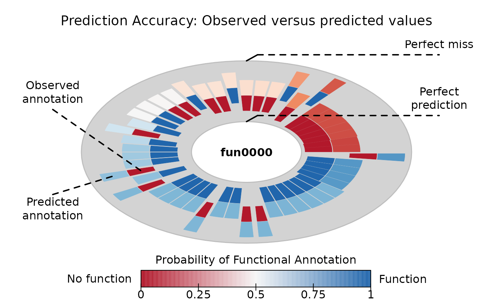

Calculate prediction score (quality of prediction)
prediction_score(x, expected, alpha0 = NULL, alpha1 = NULL, W = NULL, ...)
# S3 method for default
prediction_score(x, expected, alpha0 = NULL, alpha1 = NULL, W = NULL, ...)
# S3 method for aphylo_estimates
prediction_score(
x,
expected = NULL,
alpha0 = NULL,
alpha1 = NULL,
W = NULL,
loo = TRUE,
...
)
# S3 method for aphylo_prediction_score
print(x, ...)An object of class aphylo_estimates or a numeric matrix.
Integer vector of length \(n\). Expected values (either 0 or 1).
Probability of observing a zero an a one, respectively.
A square matrix. Must have as many rows as genes in expected.
Further arguments passed to predict.aphylo_estimates
Logical scalar. When loo = TRUE, predictions are preformed
similar to what a leave-one-out cross-validation scheme would be done
(see predict.aphylo_estimates).
A list of class aphylo_prediction_score:
obs : Observed 1 - MAE.
obs_raw : Unnormalized (raw) scores.
random_raw: Unnormalized (raw) scores.
worse_raw : Unnormalized (raw) scores.
pval : Computed p-value.
worse : Reference of worse case.
predicted : Numeric matrix with observed predictions.
expected : Integer matrix with expected annotations.
random : Random score (null).
alpha0 : The passed alpha parameters.
alpha1 : The passed alpha parameters.
auc : An object of class aphylo_auc.
obs.ids : Indices of the ids.
leaf.ids : IDs of the leafs (if present).
tree : Of class phylo.
In the case of prediction_score, ... are passed to
predict.aphylo_estimates.
In the case of the method for aphylo estimates, the function takes as a reference using alpha equal to the proportion of observed tip annotations that are equal to 1, this is:
mean(x$dat$tip.annotation[x$dat$tip.annotation != 9L], na.rm = TRUE)# Example with prediction_score ---------------------------------------------
set.seed(11552)
ap <- raphylo(
50, P = 1,
Pi = 0,
mu_d = c(.8,.2),
mu_s = c(0.1,0.1),
psi = c(0,0)
)
ans <- aphylo_mcmc(
ap ~ mu_d + mu_s + Pi,
control = list(nsteps=2e3, thin=20, burnin = 500),
priors = bprior(c(9, 1, 1, 1, 5), c(1, 9, 9, 9, 5))
)
#> Warning: While using multiple chains, a single initial point has been passed via `initial`: c(0.9, 0.5, 0.1, 0.05, 0.5). The values will be recycled. Ideally you would want to start each chain from different locations.
#> No convergence yet (steps count: 2500). Gelman-Rubin's R: 1.3925. Trying with the next bulk.
#> No convergence reached after 2500 steps (100 final count of samples).
(pr <- prediction_score(ans, loo = TRUE))
#> Prediction score (H0: Observed = Random)
#>
#> N obs. : 99
#>
#> Observed : 0.65 ***
#> Random : NA
#> P(<t) : 0.0000
#> --------------------------------------------------------------------------------
#> Values scaled to range between 0 and 1, 1 being best.
#>
#> Significance levels: *** p < .01, ** p < .05, * p < .10
#> AUC 0.78.
#> MAE 0.35.
plot(pr)
